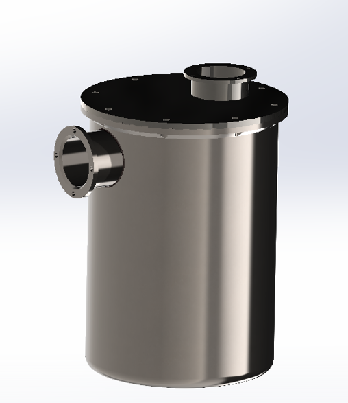
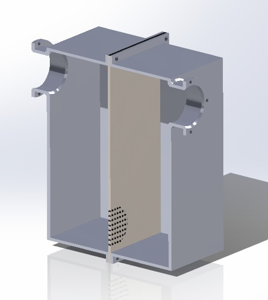
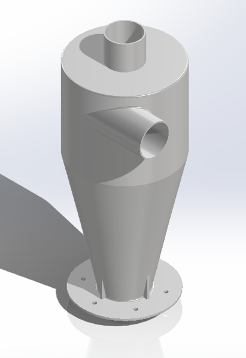

Filtros Industriais de Pó MDF
Transformando resíduos em recursos
Desenvolvemos soluções inovadoras em filtros industriais para a limpeza e purificação do pó e gases gerados na fabricação de MDF e MDP, mitigando riscos ambientais e de saúde ocupacional.
Sobre Nós
Nossa História
A FIP-MDF nasceu da união de cinco visionários — Alice, Jéssica, Maria Eduarda, Gabriel e Hiury — com a missão de inovar no setor de engenharia e sustentabilidade industrial. Observamos os desafios ambientais e de saúde ocupacional na produção de MDF/MDP, como a liberação de Formaldeído e Compostos Fenólicos tóxicos, e decidimos transformá-los em oportunidades de inovação.
Somos uma empresa de tecnologia sustentável voltada para a indústria de MDF e MDP. Nosso foco é transformar resíduos e poluentes gerados na produção — como pó de madeira, formaldeído e compostos fenólicos — em insumos reutilizáveis e de alto valor econômico, reduzindo impactos ambientais e protegendo a saúde ocupacional.
Nossa Equipe

Alice Vasques Rodrigues
Gestora Administrativa e Operacional

Hiury de Oliveira Lima
CEO

Jessica Martins Lino
Gestora de Comunicação e Estratégia

Maria Eduarda Rocha Teixeira
Gestora de Soluções Químicas

Pedro Ernesto Silva da Cunha
CFO/CTO
Problema Existente na Indústria
A produção de MDF/MDP libera substâncias nocivas:
- Formaldeído: cancerígeno (OMS), emitido pelas resinas sintéticas.
- Fenóis: tóxicos e persistentes no ambiente.
- Pó de madeira: causa doenças respiratórias e riscos de explosão.
Esses poluentes geram:
- Doenças ocupacionais
- Passivos ambientais e multas
- Perdas de matéria-prima
- Pressão regulatória crescente
Missão
Desenvolver soluções inovadoras e ecológicas para a purificação de ar industrial, reduzindo impactos ambientais e promovendo a segurança ocupacional.
Visão
Ser referência nacional em sustentabilidade e eficiência na indústria madeireira.
Valores
Inovação, Sustentabilidade, Qualidade, Eficiência e Compromisso Ambiental.
Produtos e Tecnologias
A Solução – EcoFiltro FIP-MDF
Desenvolvemos um sistema integrado de filtragem e reaproveitamento composto por etapas industriais que não apenas mitiga os riscos, mas também otimiza o uso de recursos, transformando resíduos em matéria-prima valiosa.
Fluxo de Controle e Recuperação Integrados (Etapas Principais)
Ciclone + Filtro de mangas
Captura mais de 99% do pó de madeira. Etapa inicial para a remoção da poeira de madeira e material particulado fino (risco ocupacional significativo). Essencial para a segurança ocupacional e para proteger as etapas posteriores do sistema.
Scrubber / Adsorção funcionalizada (Lavador de Gases)
Remove formaldeído e VOCs hidrossolúveis. Implementado antes do filtro de carvão, este sistema é crucial para a adsorção dos poluentes de base fenol e formaldeído, que apresentam características ácidas.
Carvão ativado / Resinas poliméricas
Retém compostos fenólicos e resíduos orgânicos. O remanescente de gases será retirado com o filtro de carvão, após a passagem pelo lavador de gases.
Filtro Final
Garantia de que o ar liberado atenda aos padrões mais rigorosos, reforçando a conformidade ambiental.
Reaproveitamento dos Subprodutos
| Resíduo recuperado | Reuso industrial |
|---|---|
| Pó de madeira | Painéis, briquetes, combustível, substrato agrícola |
| Formaldeído | Reprocessamento de resinas e produtos químicos |
| Fenóis | Resinas fenólicas, farmacêuticos, agroquímicos |
O efluente líquido gerado pelo lavador de gases, com caráter ácido (devido ao Formaldeído e Fenóis), pode ser neutralizado com solução de cal hidratada para garantir a conformidade ambiental antes do descarte ou reaproveitamento.

Filtro Ciclônico de Alta Eficiência
Primeira barreira contra o pó de madeira, otimizando a recuperação do material.

Lavador de Gases Modular
Sistema compacto e customizável para neutralização de gases ácidos e redução de VOCs.

Filtro de Carvão Ativado Industrial
Tecnologia de adsorção para a remoção final de Formaldeído e Compostos Fenólicos.
Sustentabilidade em Foco
Reaproveitamento: Transformando Resíduos em Recursos
Nosso lema, "Transformando resíduos em recursos", é a espinha dorsal da FIP-MDF. Através do nosso sistema de controle e recuperação, o pó de madeira, formaldeído e fenóis capturados podem ser reintroduzidos no processo produtivo da indústria.
Benefícios Técnicos e Econômicos
- Até 20% de aumento da vida útil dos equipamentos
- 15–20% de redução de custos operacionais
- Redução drástica de resíduos e emissões atmosféricas
- Conformidade ambiental e trabalhista
- Receita adicional com venda/reuso dos subprodutos
Público-Alvo
- Indústrias de MDF/MDP
- Indústria moveleira
- Marcenarias
- Empresas de tratamento de resíduos
- Consultores e auditores ambientais
Proposta de Valor
A FIP-MDF une tecnologia, sustentabilidade e rentabilidade:
- Segurança Ocupacional: Redução da exposição dos trabalhadores a VOCs cancerígenos e poeira fina
- Conformidade Proativa: Antecipação e atendimento rigoroso às normas e legislações ambientais
- Vantagem Competitiva: Fortalecimento da imagem como líder em sustentabilidade, abrindo portas para novos mercados e parcerias globais
- Economia Circular: Transformação de poluentes em recursos valiosos
Galeria de Projetos


Entre em Contato
Fale Conosco
Informações Adicionais
E-mail: Fipmdf.contato@gmail.com
Redes Sociais
Parceria Estratégica
Vamos transformar o desafio da emissão de poluentes em uma oportunidade de inovação e liderança de mercado.